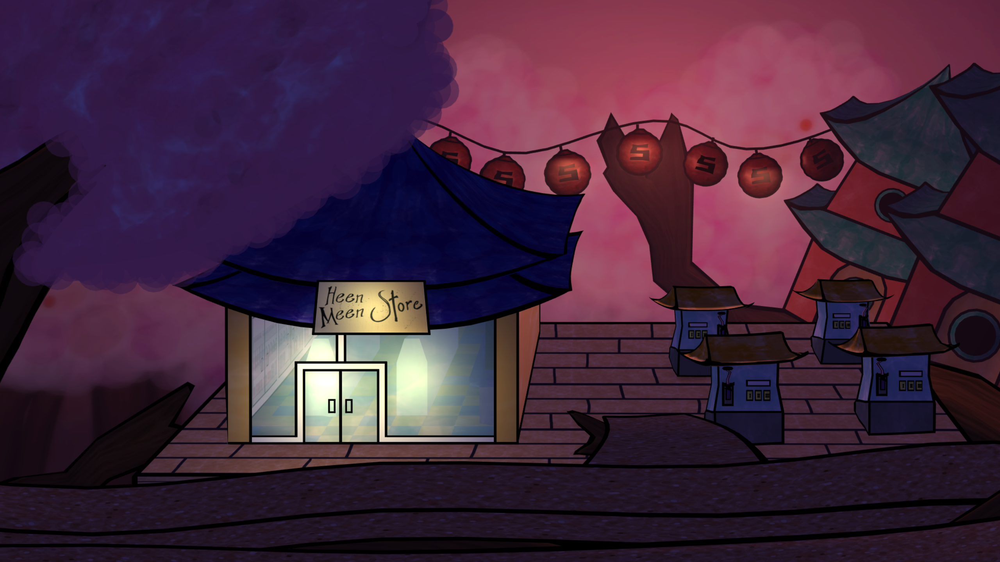

My journey as an animator began when I was 13, and my journey as a filmmaker began 4 years later. But as a student, I lacked money or resources. I wanted a form of animation that could be faster, affordable, and just as impactful with limited resources.
I came up with a computer animation technique with 2D-looking models inside 3D sets they could interact with. This has become an outlet for two award-winning pilots, and it continues to make seemingly impossible ideas possible.
You can see all my past works by clicking on my portfolio. To learn more, check out my resume.